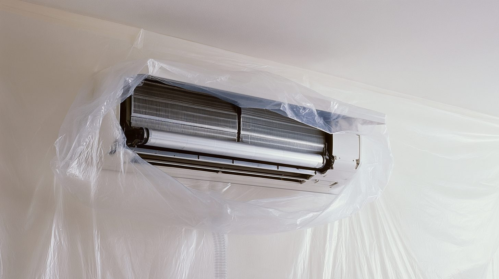
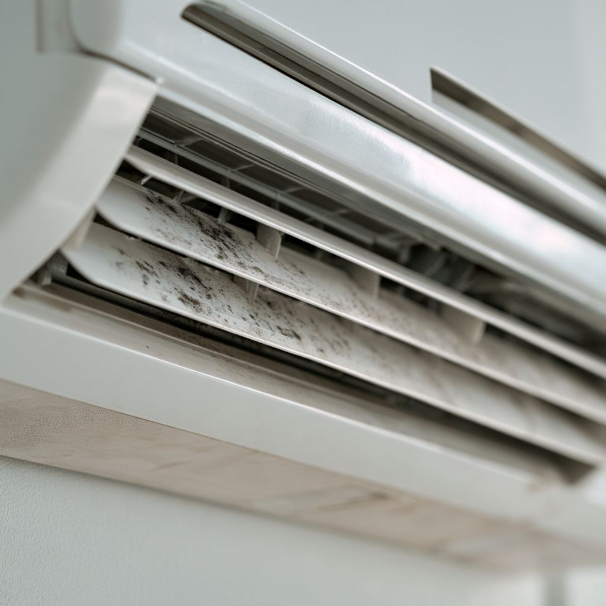
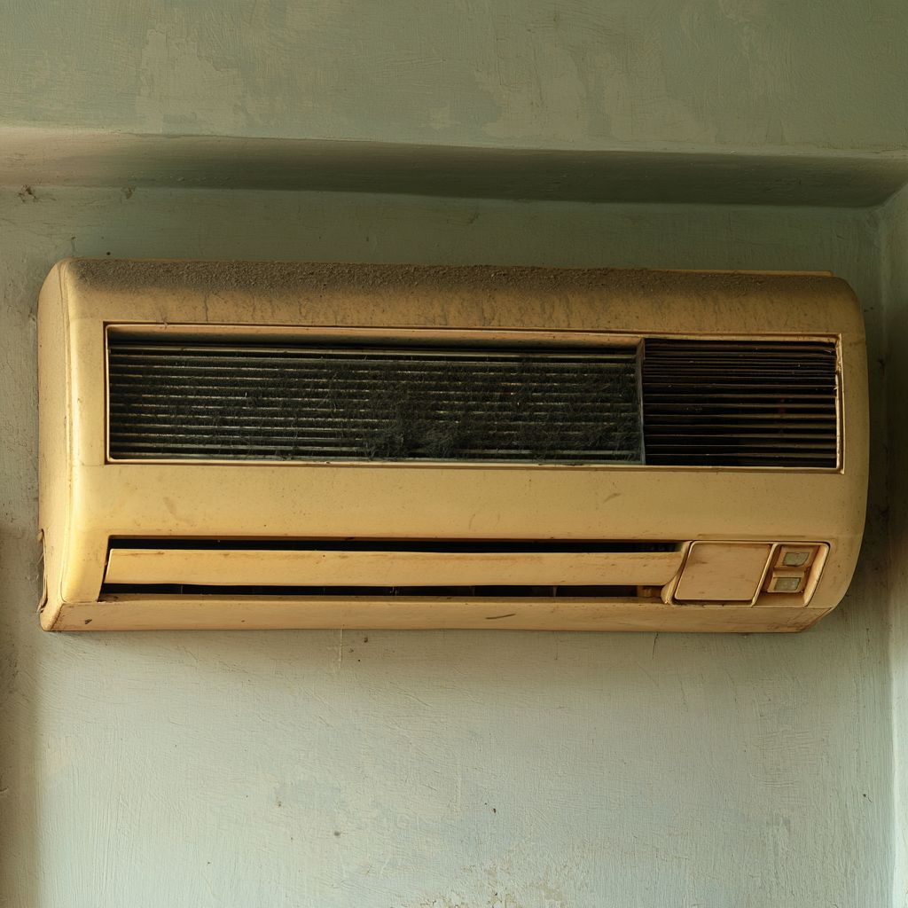
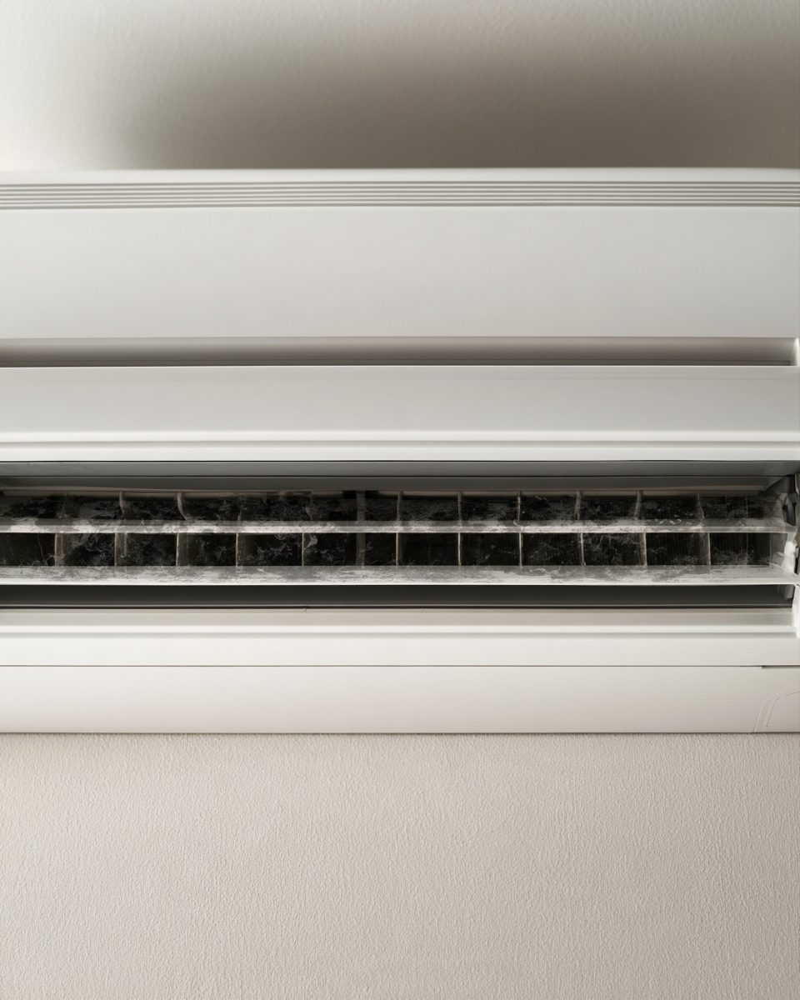
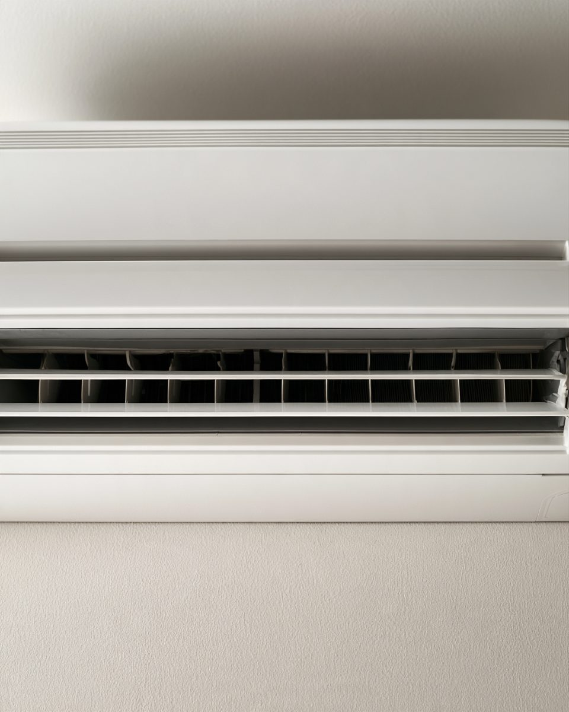
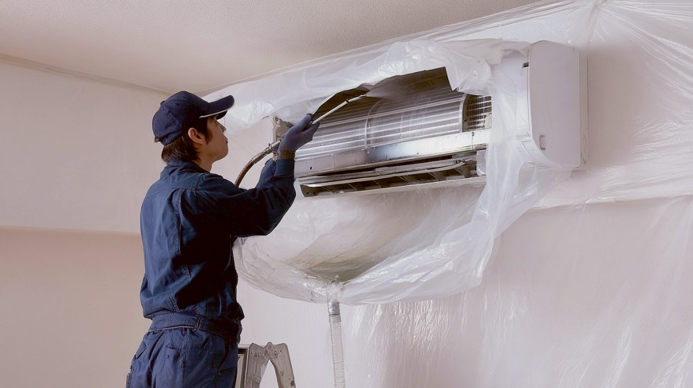
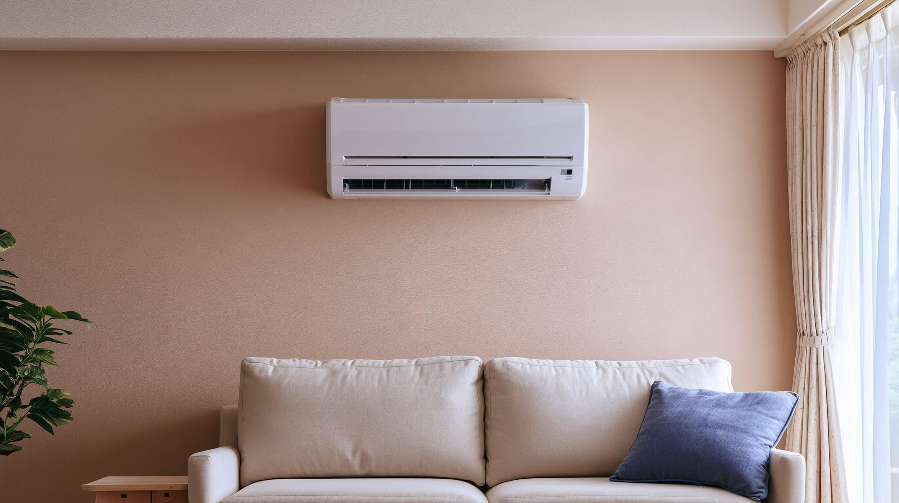

01壁も
壁も床も、
まわりを汚さない
まわりを
作業の
使っている
プロが
見積もり後の
エアコンを

吹き出し口の

何年も
市販の
その
あるかもしれません。
吹き出し口の


※イメージ写真です(サンプル)。

作業の

カバーや
洗う
※サンプルの
フィルターの
| 自分で 掃除 | 市販の スプレー | そよかぜ | |
|---|---|---|---|
| 奥の 熱交換器 | ×手が | △汚れが 残る | ◎分解して |
| 汚れた | - | △内部に 残る | ◎カバーで |
| 故障の | △分解は メーカー非推奨 | △使い方に | ◎作業の 動きを |
| 手間・時間 | △自分で | △自分で | ◎約1〜2.5時間で |
※比較は
＼ 見積もり・キャンセル無料 ／
作業の
どこが、
作業中に
標準タイプは
作業前の
カバーや
内部を
組み立てて
毎年、
30代・女性/壁掛け1台
床や
40代・男性/お掃除機能付き1台
どこが
60代・女性/壁掛け2台
※サンプルの
作業の
エアコンクリーニングは、お客様の
気に
そよかぜ空
標準タイプは
エアコンの
作業の
現金の

○○市・△△市と
受付 9:00〜18:00(日曜定休)/番号は
入力は